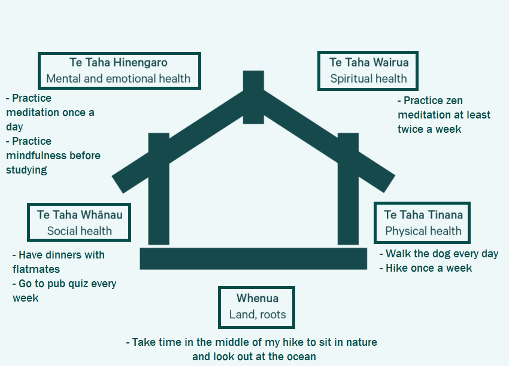

Te Whare Tapa Whā is a model of the four dimensions of wellbeing, based on a Māori perspective of health. The four dimensions are taha tinana (physical wellbeing), taha hinengaro (mental wellbeing), taha wairua (spiritual wellbeing), and taha whānau (family wellbeing). The four dimensions are represented by the four walls of the wharenui.
Below is my Te Whare Tapa Whā, which I will use as a guide to keep myself healthy during my studies, and beyond.
